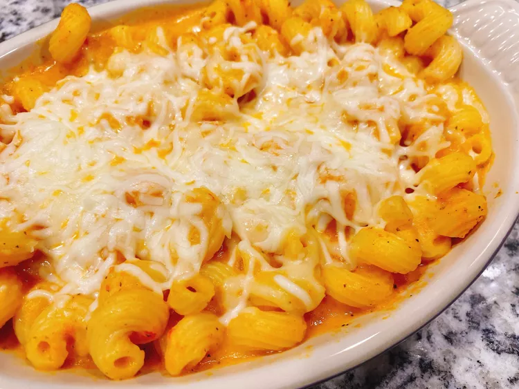

Pasta

Description
Creamy Veggie Cavatappi Pasta without Cream is loaded up with hidden vegetables, and it's so flavorful!
Ingredients
- tablespoon olive oil
- 1 onion, diced
- 2 medium carrots, peeled and cut into 3-inch pieces
- 1 red bell pepper, cut into strips
- 1 (16 ounce) package cavatappi pasta
Steps
- Spread out tomatoes, carrots, onion, bell pepper, zucchini, and garlic on a baking sheet and drizzle with olive oil. Sprinkle with Italian seasoning, salt, and crushed red pepper.
- Roast in the preheated oven until vegetables are soft, 30 to 35 minutes.
- Bring a large pot of lightly salted water to a boil. Cook cavatappi in the boiling water, stirring occasionally
- Toss pasta with vegetable sauce. Sprinkle with cheese and serve immediately.